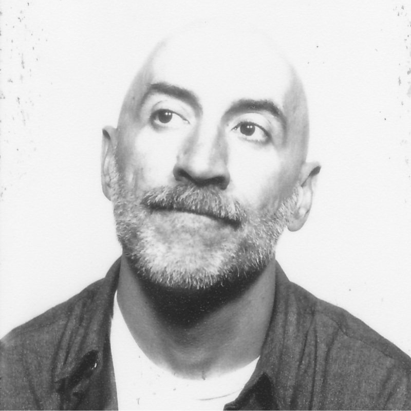
ÁMÁlvaro Márquez
London, UK
Álvaro Márquez is a designer and creative leader working at the intersection of technology and human experience. Formerly Chief Experience Officer at icon incar and alumnus of frog, Method, and ABC, he now serves as VP of Experience Design at Publicis Sapient in London, shaping digital transformation for global clients across automotive and mobility.
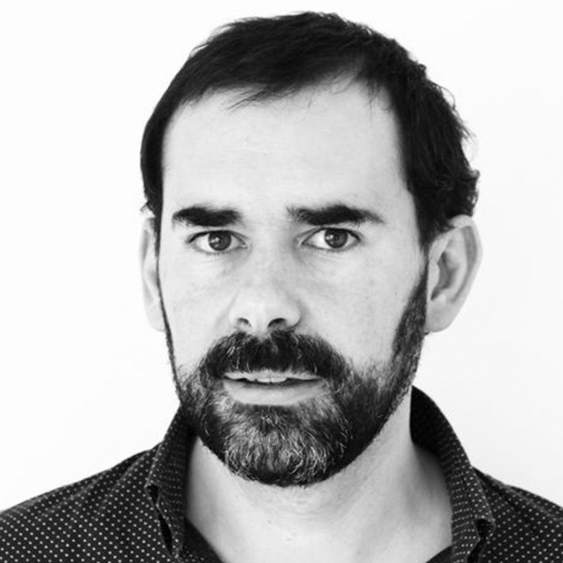
AOAndrés Ortiz
Barcelona, Spain
Andrés Ortiz is Co-Founding Partner of Bestiario, a creative data design agency with studios in Barcelona and Bogotá. An architect by training turned UX and AI designer, he leads projects at the intersection of data visualization, interaction design, and emerging technology, helping organizations make complex information meaningful and beautiful.
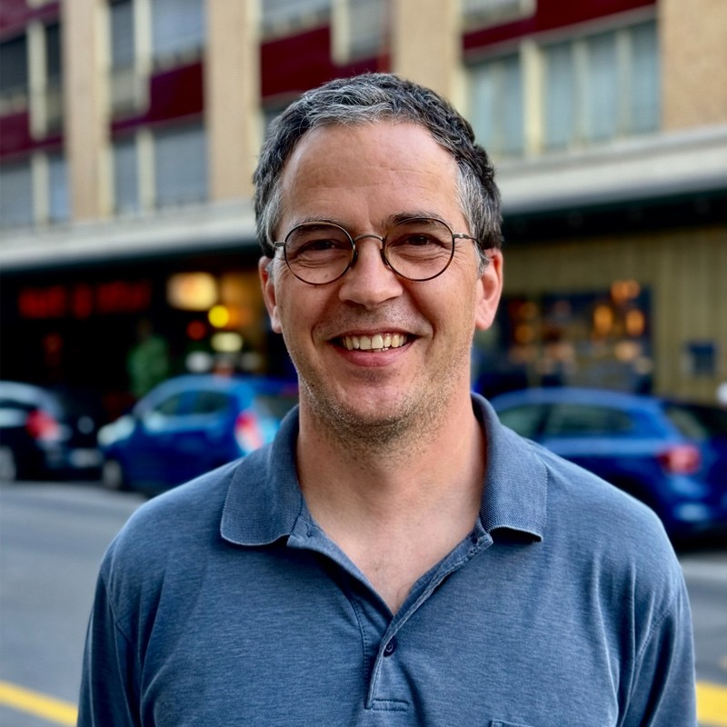
BZBasile Zimmermann
Geneva, Switzerland
Basile Zimmermann is a Senior Lecturer at the University of Geneva's Global Studies Institute, where he teaches and researches the anthropology of innovation with a comparative focus on China and Europe. Author of Waves and Forms (MIT Press), he also co-created CERTIFY, a distributed framework leveraging fact-checkers and crowdsourcing to strengthen news credibility on social media.
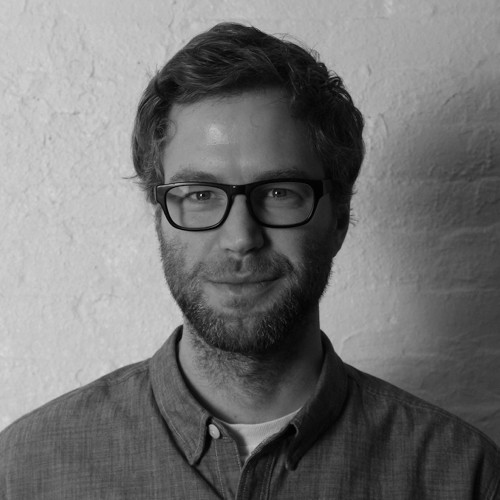
DGDaniel Goddemeyer
Amsterdam, Netherlands
Daniel Goddemeyer is a former Creative Director currently at IKEA, with over twenty years of experience envisioning future products and services. A faculty member at SVA's MFA Interaction Design program, he has led award-winning work for clients including Google AI, Audi, and BBVA, and is known for design at the intersection of data, AI, and human behavior.
David Serrault
Paris, France
David Serrault is Design Director at Groupe BPCE, France's second-largest banking group, where he leads AI-driven customer experience and design at scale. He steers the group's design system and UX strategy across retail banking and digital payments, and writes on Medium about the evolving relationship between artificial intelligence and design practice.
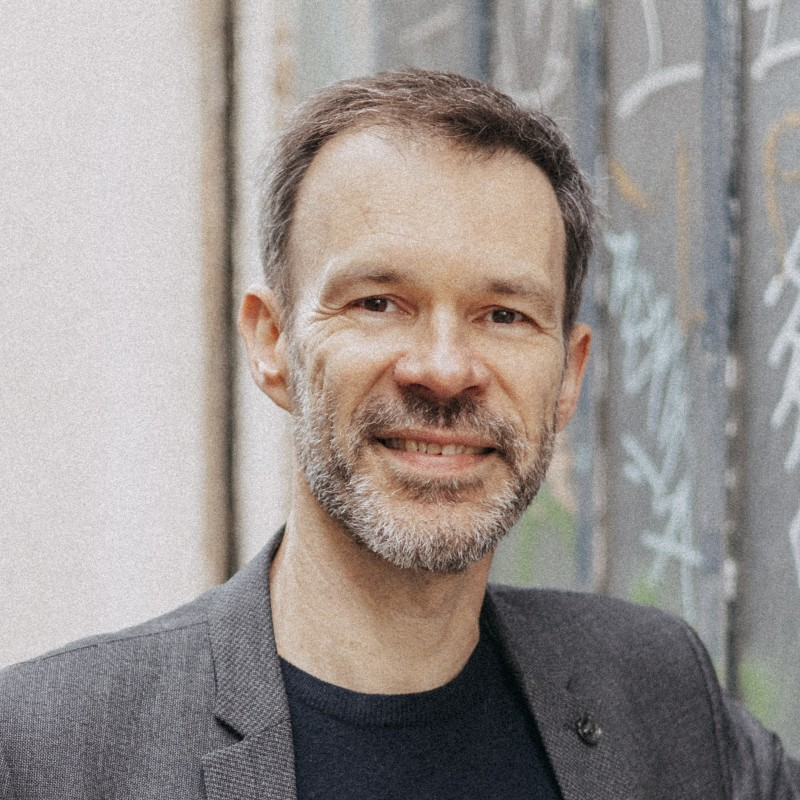
EHEmile Hooge
Lyon, France
Emile Hooge is a Partner at nova7, a Lyon-based research and strategy consultancy, where he combines strategic foresight, user research, and service design to help organizations navigate systemic change. He also teaches at EM Lyon Business School and is a recognized voice on sustainable lifestyles and territorial transition.
Fabien Girardin
Gijón, Spain
Fabien Girardin is a multidisciplinary technologist working at the interface of people and intelligent systems. Refined across 15 years of experiments from MIT to the Near Future Laboratory, his people-first approach blends creativity with engineering. A pioneer of design fiction, he co-authored The Manual of Design Fiction.
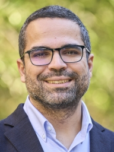
JRJose A. Rodriguez-Serrano
Barcelona, Spain
Jose A. Rodriguez-Serrano is a Senior Lecturer in AI at Esade Business School and Director of the Data, Analytics, Technology and Artificial Intelligence department. Holding a PhD in Computer Vision and over 20 patents, he previously led applied AI at BBVA's AI Factory, bringing deep industrial experience to his academic and advisory work.
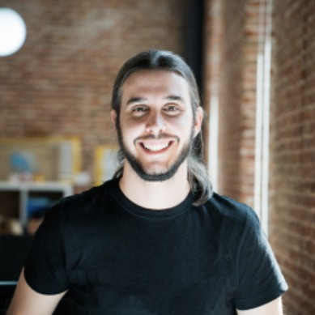
JMJuan Morales del Olmo
Madrid, Spain
Juan Morales del Olmo is an Interaction Designer and Data Scientist at Graphext, where he blends design, development, and data analysis to make complex information visually accessible. Holding a PhD in Computer Science from Universidad Politécnica de Madrid, he bridges academic rigour and product craft in the field of human-computer interaction.
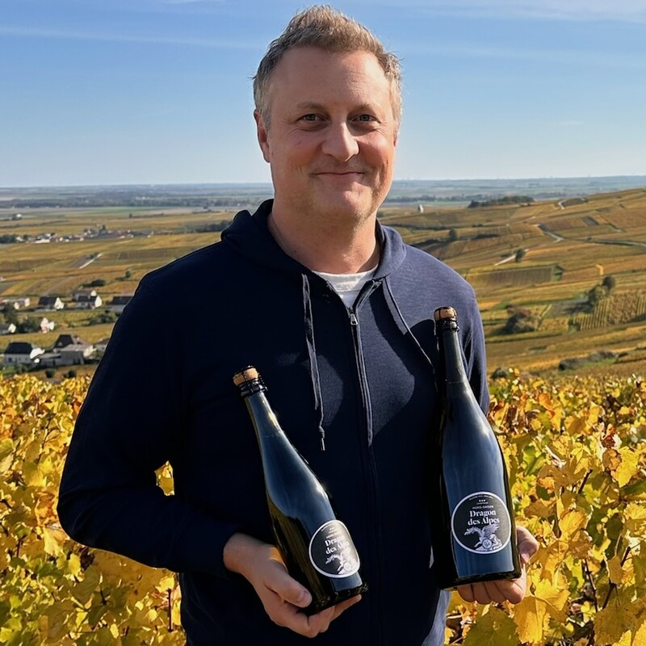
LHLaurent Haug
Villars sur Ollon, Switzerland
Laurent Haug is a Swiss entrepreneur, curator, and technology strategist best known for founding the Lift Conference, Europe's pioneering forum on technology and society. Through his consultancy, he advises global organisations on anticipating technological change and translating emerging trends into strategic opportunity.
Lisa Gansky
Piedmont, Italy
Lisa Gansky is a serial entrepreneur and investor who co-founded GNN (one of the first commercial websites) and Ofoto, and authored The Mesh, a defining book on the sharing economy. Today she co-leads Mesh Ventures and Boundaryless, backing startups at the frontier of networked business models and open systems.
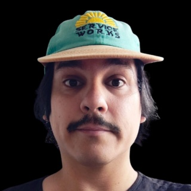
NBNicolás Bronzina
Madrid, Spain
Nicolás Bronzina is an AI-enhanced futures designer and co-founder of Heated Studio, a consultancy specialising in climate futures. Working at the intersection of design fiction, speculative prototyping, and sociological research, he helps organisations turn abstract climate and technological risks into tangible artefacts and strategies teams can act on.
Patrick Pittman
Toronto, Canada
Patrick Pittman is a writer, editor, and creative business strategist based between Toronto and Newfoundland. Former editor of cult Australian magazines Dumbo Feather and The Alpine Review, he now runs No Media Company, delivering research-driven strategic sensemaking for global clients, and is a member of the GROUP OF HUMANS creative leadership network.
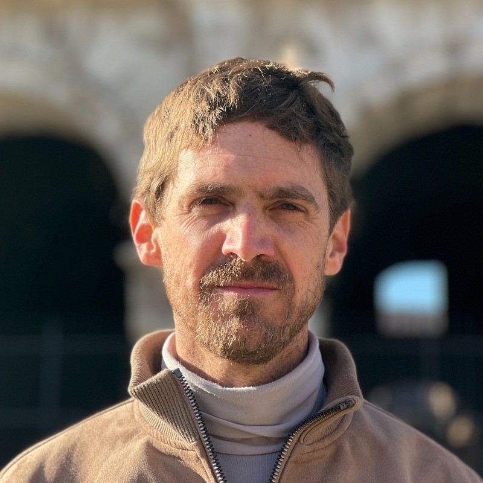
PHPierre Heistein
San Rafael, Argentina
Pierre Heistein is a South African macroeconomic analyst and writer whose work spans sub-Saharan Africa, Iran, and Argentina. A former analyst at Oxford Analytica and engagement manager at 10EQS, he founded The 12.01 Project, a documentary production platform for social and economic change.
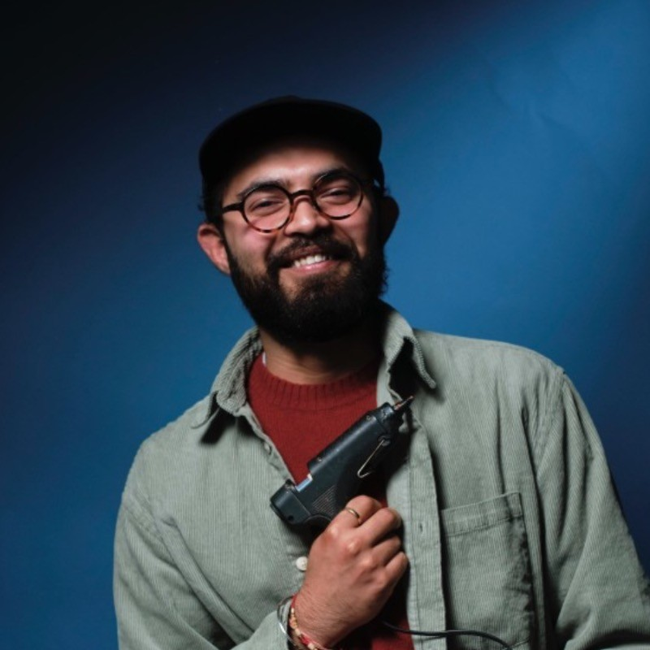
RGRohit Gupta
Madrid, Spain
Rohit Gupta is a design engineer and creative technologist based in Madrid, bridging physical computing, interaction design, and data visualisation. A CHI 2017 Best Paper Award winner, he works with innovation teams to build prototypes that validate product and market hypotheses, and is a fellow at IED Madrid's Innovation Lab.
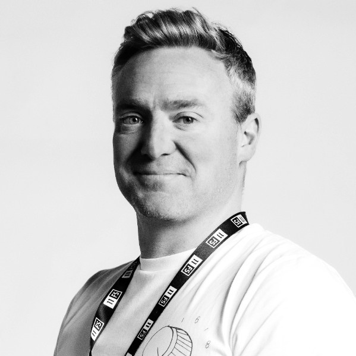
RMRoss Methven
London, UK
Ross Methven is a co-founder of financial services consultancy 11:FS and Managing Director of 11:FS Pulse, the firm's digital banking benchmarking product. With over two decades in digital banking research, he helps financial institutions understand how their products compare against the global landscape of digital-first challengers.
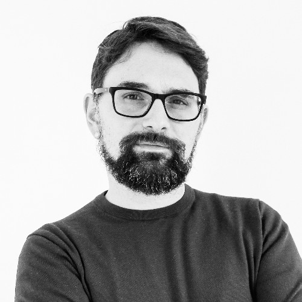
SCSimone Cicero
Roma, Italy
Simone Cicero is CEO of Boundaryless and creator of the Platform Design Toolkit, an open-source methodology now used by over 70,000 practitioners worldwide to design platform businesses and ecosystems. He advises organisations on decentralised organisational models and the future of work and value creation.
Stefana Broadbent
Milan, Italy
Stefana Broadbent is a digital anthropologist and Professor at the Politecnico di Milano's Department of Design, and Honorary Visiting Researcher at UCL. A TED speaker and former director of the Collective Intelligence unit at Nesta, she has spent two decades studying how people integrate technology into everyday life at home and at work.